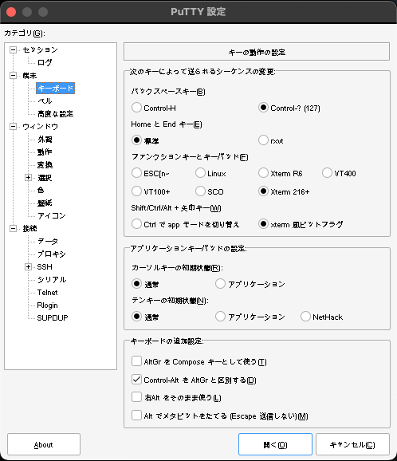

Putty でemacsを使うとき
Table of Contents
1. Putty は使えるか。
MacOSX (Ventura) の wine64 で windowsの putty.exe を起動した。Windowsの PuTTY は未検証。
- メタは Esc を使う。
- シフトセレクションは一部しか使えない。
- fn キーは使える
- 日本語の表示が乱れる
2. 設定
PuTTY設定 > 端末 > キーボード
"ファンクションキーとキーパッド" の Xterm 216+ を選択
"Shift/Ctrl/Alt + 矢印キー" の xterm風ビットフラグ を選択

PuTTY設定 > 端末 > 高度な設定
"アプリケーションキーパッドモードを無効にする" をチェック
"アプリケーションカーソルキーモードを無効にする" をチェック
3. 使えるキー
<up> M-[ A <down> M-[ B <right> M-[ C <left> M-[ D S-<up> M-[ 1 ; 2 A S-<down> M-[ 1 ; 2 B S-<right> M-[ 1 ; 2 C S-<left> M-[ 1 ; 2 D C-<up> M-[ 1 ; 5 A C-<down> M-[ 1 ; 5 B C-<right> M-[ 1 ; 5 C C-<left> M-[ 1 ; 5 D C-S-<up> M-[ 1 ; 6 A C-S-<down> M-[ 1 ; 6 B C-S-<right> M-[ 1 ; 6 C C-S-<left> M-[ 1 ; 6 D <home> M-[ 1 ~ <end> M-[ 4 ~ <prior> M-[ 5 ~ <next> M-[ 6 ~ <deletechar> M-[ 3 ~ S-<home> M-[ 1 ; 2 ~ S-<end> M-[ 4 ; 2 ~
4. init.el に書くPutty用の初期化コード
(defun ak-puttykey ()
"PuTTY key setting"
(interactive)
(define-key input-decode-map (kbd "M-[ 1 ; 2 ~") (kbd "S-<home>"))
(define-key input-decode-map (kbd "M-[ 4 ; 2 ~") (kbd "S-<end>"))
(global-set-key [home] 'beginning-of-buffer)
(global-set-key [end] 'end-of-buffer)
(ak-vscode)
)
(if (string= (getenv "PUTTY") "yes")
(progn
(ak-puttykey)
(message "PuTTY terminal")))
alias empu='PUTTY=yes emacs -nw'
S-<home> と S-<end> は設定が必要だった。この系統。
S-<insert> M-[ 2 ; 2 ~
5. VSCode の設定が便利なので借りてくる。
(defun ak-vscode ()
"vscode key setting"
(interactive)
(global-set-key (kbd "M-,") 'beginning-of-buffer)
(global-set-key (kbd "M-.") 'end-of-buffer)
(define-key input-decode-map (kbd "M-<") (kbd "M-S-,"))
(define-key input-decode-map (kbd "M->") (kbd "M-S-."))
(global-set-key (kbd "C-M-p") 'half-page-down)
(global-set-key (kbd "C-M-n") 'half-page-up)
;;;; (define-key input-decode-map (kbd "¥") (kbd "\\"))
(if (boundp 'cua--cua-keys-keymap)
(global-set-key (kbd "C-x SPC") 'cua-set-rectangle-mark)
(message "cua boundp? no."))
)
Esc n Esc p Esc N Esc P Esc , Esc . Esc < Esc > C-x SPACE で cua-modeの矩形選択開始